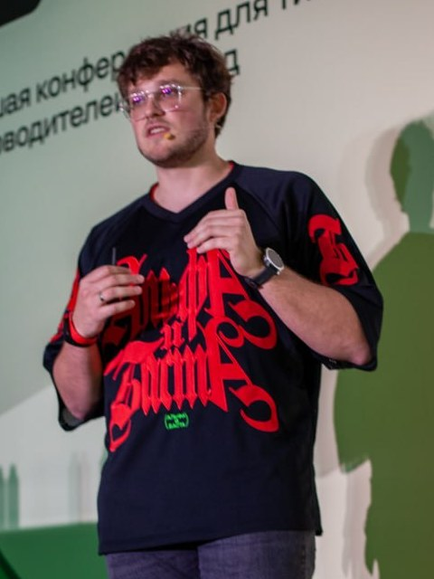

Владислав Сазонов
ИТ-лидер в Альфа-Банке · ИИ в инженерных командах
Отвечаю не только за технологии, но и за людей и процессы — и за то, как всё это срастается с бизнесом. Последние годы работаю на стыке управления и ИИ: внедряю агентов в работу команд и смотрю, как ИИ меняет само устройство разработки.
Ценю прозрачность и прямоту, к каждому человеку ищу свой подход, а процесс, по-моему, должен жить, пока приносит пользу, — и не дольше. Веду открытый курс Agentic Engineering, выступаю на конференциях и помогаю руководителям как ментор.
Вхожу в программный комитет трека AI Native в Ontico — организаторе HighLoad++ и TeamLead Conf.